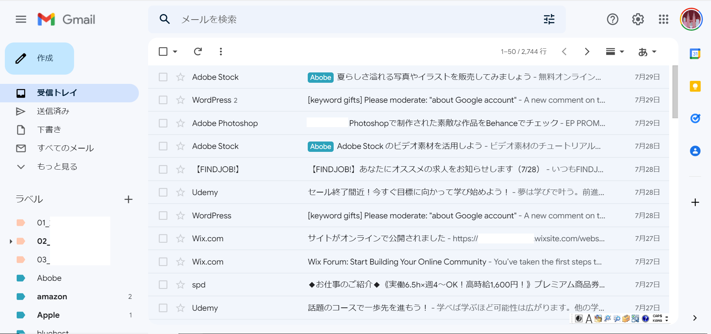
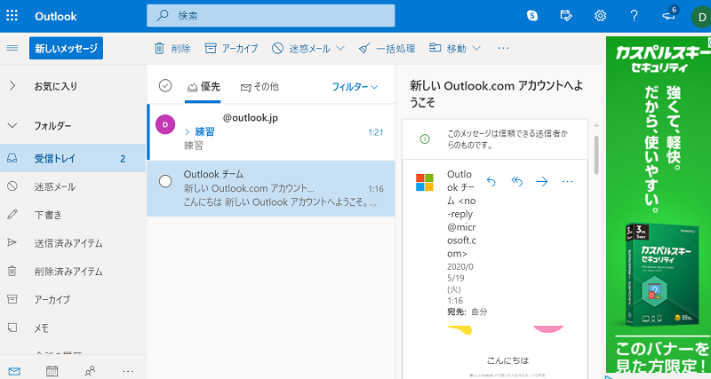
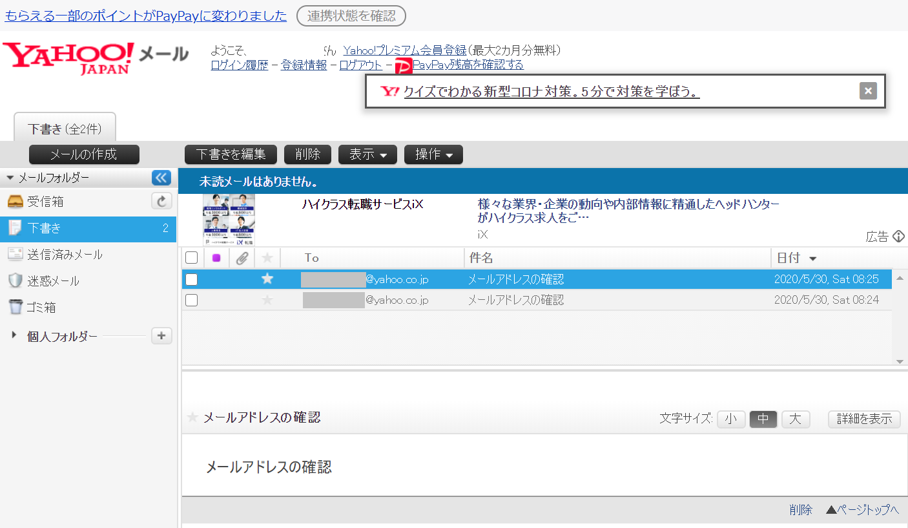
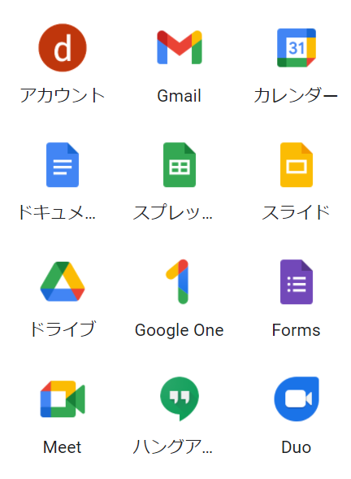
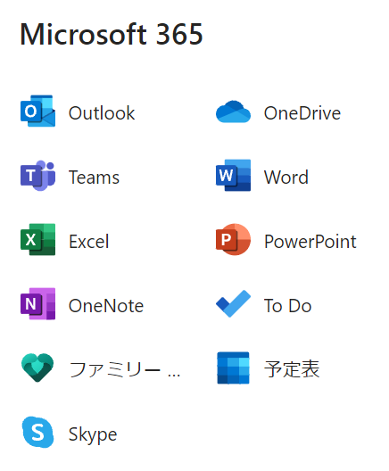
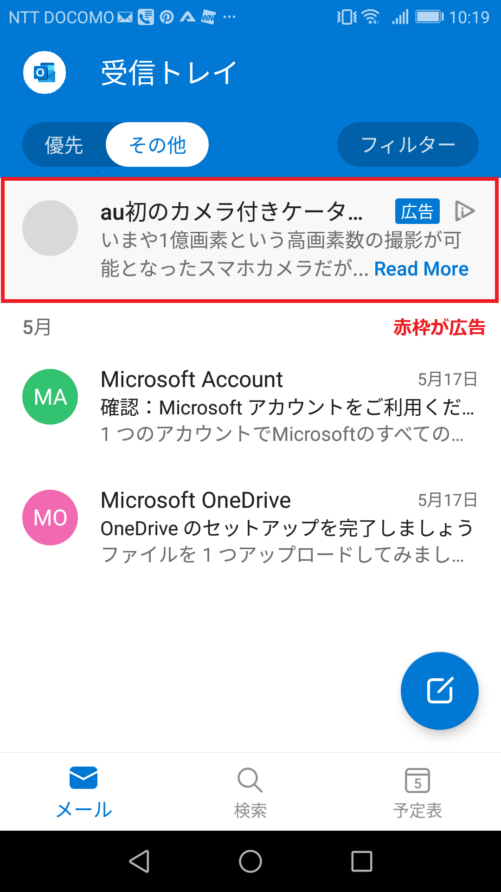
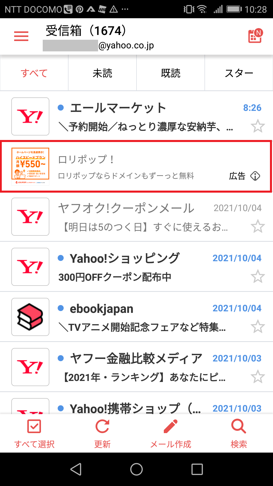

「メールアドレスをもう１個作りたい」と思ったら、GmailやOutlookメールなどのフリーメールサービスで無料のメールアドレスを作成しましょう。 このページでは人気のフリーメールとしてGmail、Outlook、Yahooメール、icloudメールなど4種類のフリーメールサービスを紹介しています。
フリーメールなら誰でも簡単に、かつ無料でメールアドレスを作ることが出来ます。
「名前」「生年月日」「メールアドレス名」など、わずかな項目に記入するだけで作れるので、10分もあればメールアドレスを作れます。
特に用意するものもないため、このページを読みながら今すぐにメールアドレスが登録できます。
そして、今のフリーメールは無料とは思えないほど機能がしっかりしています。99%のスパムメール排除機能（Gmail）やフォルダ分け機能も完備されています。
Gmailをメインのメールアドレスとしている方も多くなっている時代。 メールアドレスを増やしたい方は、是非このページを読んで頂いてメールアドレス作りにご活用ください。
実際にフリーメールがどのような特徴を持っているのか、くわしく説明してみます。
当ページで紹介しているGmail、Outlook、Yahooメール、Icloudメールのサービス はどれも「Webメール」と呼ばれる機能を持っています。
Webメールとは、ネットに繋がっているデバイス（スマホやパソコン）があればどこからでもメールをすることが出来る機能のこと。
例えば自分が持っているスマ―トフォンだけでなく、知り合いが持ってるスマ―トフォンからでも管理画面に入ってメールをすることが出来ます。 それ以外にも自宅のパソコンだったり、職場のパソコン、ネットカフェのパソコンなど。どこからでもメールをすることが出来ます。
このようにWebメール機能が備わっていると「いまメールがしたい」と言う時に、スマホやパソコンさえ近くにあれば場所を問わずどこでもメールが出来るメリットがあります。
フリーメールはその名前の通り、メールアドレス作成も無料でサービスの利用についてもお金がかかりません。 Gmail、Outlook.com、ヤフーメールは基本的に無料になっています。
データ容量を増やしたい場合は有料プランに乗り換えすることも出来ますし、 ビジネスアカウントとして法人が利用する場合も有料プランでの加入が必須となります。
フリーメールの管理画面に入るにはID・パスワードを入力して入ります。 スマートフォンでアプリを立ち上げたり、ブラウザで専用サイトを開いたら「ユーザーID」と「パスワード」を入れてください。
Yahooメールのみパスワードを使わない方法でログインします。Yahooメールではログインの度に登録の携帯電話にショートメールが送られてくるので、 ショートメールに書かれている番号を認証をすることで管理画面に入れます。
フリーメールは1つだけでなく、複数のアカウントを作ることも可能になっています。 そのため、家族用のアカウントだったり自分用の2つ目のアカウントを作ることも簡単に出来ます。
「同時に複数のアカウントで入りたい」場合でもマルチログイン機能と呼ばれる機能があり、アカウントの切替えはとても簡単になっています。 パソコンでもスマホでも１クリック２クリックほどで画面の切替えが出来ます。
GmailやOutlookメールではアカウントを作るだけで、ワードやエクセルのような「資料作成ソフト」「スケジュール管理ソフト」がついてきます。 Googleドライブのような「データを保存できるオンラインストレージ」もあります。信じられないことに、これらのソフトは無料で利用できます。
本来であれば月額費用が掛かってもおかしくないサービスが、フリーメールのアカウントを作るだけで無料で利用できるようになります。
また、これから会社用のメールアドレスを作ろうとしている方に向けて情報をまとめているページも作っていますので、 企業でメールアドレスを作成したい方は以下のページを参考にしてみてください。
独自ドメインによる専用アドレスを作る方法、メールアドレス名の付け方のポイントなどについて解説しています。
フリーメールのサービスは沢山ありますが、ここでは主だった4つのサービスを紹介します。
シェア別で紹介するとGoogleの「Gmail」を使っている人が最も多くなっていて、それに続いて「Outlook」「Yahooメール」が人気のフリーメールになります。
「icloudメール」についてはiphoneやmacなどを持つユーザーに向けたサービスになります。
では、それぞれのフリーメールについて解説していきましょう。
| アドレス | 容量 | 広告表示 | |
|---|---|---|---|
| Gmail | 「***@gmail.com」 | 15GB | あり （設定で非表示に出来る） |
| Outlookメール | 「***@outlook.jp」 3種類から選べる |
15GB | あり |
| Yahooメール | 「***@yahoo.co.jp」 | 10GB | あり |
| icloudメール | 「***@icloud.com」 | 5GB | なし |

フリーメールのサービスで1番多くの人に利用されているのが、Googleが提供するGmail（Gメール）になります。
Gmailの特徴は99％の迷惑メールを弾いてくれること。パソコン備え付けのメーラーでスパムメールに苦労していた方は、 迷惑メールがほとんど届かないことに驚くと思います。
そして、過去メールの検索もすぐれています。キーワードで調べられるだけでなく、メールが届いた日時の幅を決めて調べられるなど、 様々な工夫がされています。
他にもアカウントを開設することで、WordやExcelにあたる「Googleドキュメント」「Googleスライド」、 オンラインストレージの「Googleドライブ」など、10種類近いWebアプリケーションが無料で使用できるようになります。
管理画面には少しだけ広告表示が出てきますが、Gmailの場合は設定から非表示にすることができます。

OutlookメールもGmailと同様に「Word」「Excel」（通常版のソフトより制限あり）といった資料作成ソフトや、「One Drive」と呼ばれるオンラインストレージなど、10種類近いWebアプリケーションと連携しています。
Outlookと聞くと、パソコンに備え付けしてあるメールソフトのOutlookを考える人も多いと思いますが、ここで紹介するのは無料のフリーメールが作れる「Outlookメール」という別のサービスになります。
ほぼ、Gmailとサービス内容が被っています。わかりやすいところでは、広告表示がGmailより少しだけ多いところ、管理画面のデザインがGmailよりスタイリッシュな点が違いといえます。

「Yahooメール」も人気のサービスの1つではありますが、 GmailやOutlookメールと比べて、Yahooメールはより簡易的なフリーメールサービスになります。 データ容量は最初2GBとなっていて最大10GBまでメール容量を増やすことが出来ます。
アカウント作成時に携帯電話による登録が必須となっていて、パスワードは登録しません。 ログインする際は携帯電話へショートメールが届き、コードを入れて管理画面に入ります。
今回紹介しているサービスでは、最も広告が多いサービスになっています。また、半年間操作がない場合は、メールデータが削除されます。
どちらかと言うとメイン活用するフリーアドレスではなく、サブで活用するサービスと言えます。
icloudメールも無料で作れるフリーメールになります。基本的にiphoneやMacなどを持っている人に限定されたサービスになっています。
アンドロイドOSのスマホや、パソコンのWindowsユーザーでも作ることが出来ますが、その場合Microsoftストアで「iCloudアプリ」をダウンロードする必要があるなど環境構築が大変な所があります。
そのため実質的に使えるデバイスがiphoneやMacなどAppleのデバイスに限定されています。 すぐにどこでもメールが出来るWebメール機能は、半分ほどしか持ち合わせていないと言えるでしょう。
また今回紹介しているフリーメールでは、唯一広告が入っていないフリーメールになっています。
各フリーメールの比較として「データ容量」、「1通あたり最大メール容量」、「連携アプリケーション」「広告表示の有無」などそれぞれの機能について紹介をしてみたいと思います。
Gmail、Outlookともに15GBのデータ容量がもらえます。
このデータ容量はメールBOXだけではなくて、付属のオンラインストレージや資料系ソフトのデータ量も合わせての提供になります。
メールだけで15GBあればそうそう使い切れる量ではありませんが、 ストレージサービスを利用してスマホで撮影したフォトや動画などのデータも保存する場合は容量を使い切ってしまうこともあるでしょう。
容量を追加したい場合には、アップグレードで容量を増やすことが出来ます。例えばGmailであれば月額250円を支払うと15GBから一気に100GBまで増やすことが出来ます。
| データ容量 | |
|---|---|
| Gmail | 15GB |
| Outlookメール | 15GB |
| icloudメール | 5GB |
| Yahooメール | 2GB（最大10GB） |
GmailとYahooメールは、1通のメールを送るのに最大25Mbまでデータを送れます。とicloudメールは最大20MBまでになります。
| 1通あたりメールサイズ | |
|---|---|
| Gmail | 1通あたり25MB迄 |
| Yahooメール | 1通あたり25MB迄 |
| Outlookメール | 1通あたり20MB迄 |
| icloudメール | 1通あたり20MB迄 |
GmailとOutlookメールでは、様々なWebアプリケーションソフトが10種類近くも利用できるようになっています。
ソフトの種類には、オンラインストレージ、書類作成系ソフト（word、Excel、Googleドキュメント、Googleスプレッドシート）、 スケジュール調整、オンラインミーディングソフトなどがあります。
（Word、Excelについては無料版のため一部の機能は制限されています）
| Gmail | Outlook | icloud メール |
Yahoo メール |
|
|---|---|---|---|---|
| オンライン ストレージ |
Google ドライブ |
One ドライブ |
icloud ドライブ |
－ |
| スケジュール | Google カレンダー |
予定表 | カレンダー | － |
| 表計算 | Google スプレッドシート |
Excel | Numbers | － |
| 文章作成 | Google ドキュメント |
Word | Pages | － |
| プレゼン資料 | Google スライド |
Powerpoint | Keynote | － |
| メモ帳 | Keep | Onenote | メモ | － |
| ミーティング | Duo | Teams | － | － |
| その他 | Google Forms |
－ | － | － |
実際のパソコンでは、次のような画面が表示されます。該当するソフトをクリックするだけで開きます。インストール作業などは一切いりません。
 
広告表示についてはGmail、Outlook、Yahooメールの3サービスについては広告が表示されています。icloudメールは広告が入りません。
また、Gmailについては設定から広告を非表示にすることが出来ます。
広告表示の量はGmailが1番少なく、次にOutlookメール、Yahooメールの順で広告の量が多くなっています。
| 広告表示 | |
|---|---|
| icloudメール | 広告なし |
| Gmail | 少ない（設定で非表示にできる） |
| Outlookメール | 普通 |
| Yahooメール | 多い |
Outlookメール、ヤフーメールをスマホで開いた時の広告表示は次のようになっています。
 
| スマホアプリ | |
|---|---|
| Gmail | あり（App store、 Google play） |
| Outlookメール | あり（App store、 Google play） |
| Yahooメール | あり（App store、 Google play） |
| icloudメール | なし |
メールのデータ容量を増やしたい場合などは、有料プランへの乗換えやデータ容量のアップグレードで対応ができます。
| 有料プラン | |
|---|---|
| Gmail | GoogleWorkspace（月額680円～/ビジネススタータープラン） →メールプランをグレードアップすることが出来る Googleドライブ（月額250円/100GB/ベーシックプラン）から →データ容量だけを増量することができる |
| Outlookメール | Microsoft365（月額650円～/ビジネススタンダードプラン） →メールプランをグレードアップすることが出来る |
| Yahooメール | なし |
| icloudメール | なし |
このページをおさらいしてみましょう。
フリーメールと言っても無料とは思えないほど充実したサービスになっているので、今では大半の方がメインのメーラーとして使っているのではないでしょうか。
サービス内容を覚えて適切な設定を行うことで、より快適にフリーメールを活用できるようになります。次のページでも詳しく紹介していますので、 良かったら参考にしてください。

demiglaze
Web制作を始めて約19年になります（HTML/css、Photoshop、Webマーケティング）。2005年から当サイトの運営を開始。 これまでに300個以上のドメインを取得、10社を超えるレンタルサーバーを利用してきました。